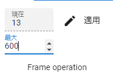

Determine the length of the animation first. By default it is 60 and FPS is also 60. Please set two places of the figure in the Animation tab of the ribbon bar as you like.

Project setting screen
Ribbon bar
FPS (frames per second)
maximum number of frames
Frame indicated by FPS and Frame in this application are not the same. Frame in this application is just an array for data management.
Warning
Changing FPS will recalculate FPS/6000.0 and automatically update the duration of all keyframes. Any manually set intervals will also change, so make sure you really want to change the FPS.
In an animation project, the interval between reaching the content of the frame is determined in seconds. By default, the calculation result of FPS/6000.0 is set.
You can change this to any number of seconds.
Open the project settings screen.
Enter the defaultduration on the Project information tab. (0.0001 to 99.9999 seconds)
If you want to recalculate all the currently registered keyframe intervals, press the Recalculate button.
By specifying it here, subsequent keyframe registrations will be registered based on the number of seconds after the change.
If you register more than one frame apart, the frame interval will be the number of seconds adjusted based on the calculation result of defaultinterval*numberofframesapart .
Hint
If you want to set the interval for each keyframe, please refer to Registering and setting keyframes … “Setting the keyframe interval” below.
Warning
Pressing the Recalculate button will automatically update the duration of all keyframes. All manually set intervals will also be changed, so do not press if you want to target only the keyframes after the change.
Set the screen size of WebGL as necessary. The default depends on the size of the window. Specify the screen size in the Screen tab of the ribbon bar.
If you specify a screen size that exceeds the window size of the current app, a scroll bar will be displayed.
If you press the Originalsize button, the screen size will return to fit the window size.
Also, please note that if the ratio is different, the expected view from the main camera and Camera object will change when the screen size is changed.
Relation between window size and WebGL screen size
There are two meanings in this application: window size change and WebGL screen size change.
Change window size:
This is a change to the app window itself. The width and height after subtracting the ribbon bar, left and right panels, and timeline panel will be the final size of the WebGL screen. If the WebGL screen size is the initial state of the app, the WebGL screen will automatically resize according to the window size.
WebGL screen size change:
The size can be changed regardless of the application window. Scrollbars will appear if the WebGL screen size is significantly larger. If you have changed the WebGL screen size manually even once, it will not change automatically even if you change the window size.
If you restore it to originalsize, it will be automatically resized again.
It is troublesome to scroll when the screen size changes. If you use this in such a case, you can expect to improve operability because you can scroll while grasping the whole.
Press the Navigation button in the Screens tab of the ribbon bar.
A small navigation window will appear inside the main app window.
A red frame is displayed as the currently displayed range on the navigation preview screen.
If the resolution of the WebGL screen is larger than the display area, clicking or dragging the red frame anywhere will scroll the WebGL screen accordingly.
Hint
You can also Resize and ResetCamera from within the navigation window.
An animation project has a timeline for each role. Roles are usually assigned automatically when loading a cast (avatar object). Here’s how to assign a cast to a specific role.
By assigning a cast to a role, the animation data on the role can be played with that cast.
Timing when casts (avatars/objects) and roles are linked
Delete the role. Delete roles that are no longer needed in your animation project. This operation also removes the actual object that is the cast assigned to the role.
To delete only the cast (object), right-click the object list and delete it.
Click Settings from the Animation tab of the ribbon bar.
Open the ManageRoles tab.
Check the radio button to the left of the role you want to remove, and click RemoveRole on the toolbar.
A confirmation message will be displayed, so press the OK button.
Warning
Deleting a role like this deletes both the role and the cast(object).
cannot delete Stage.
The same thing can be done by right-clicking on the object list and selecting Deleteboththisobjectandrole .
If you repeatedly assign casts (objects) to roles, there may be a relatively large number of timelines (roles) with no objects assigned or no keyframes registered.
Click Settings on the Animation tab of the ribbon bar.
Click DeleteEmptyTimeline on the toolbar.
A confirmation message will be displayed, so press the OK button.
A confirmation message will be displayed, so press the OK button.
1. キーフレームが一つも登録されていない
2. タイムライン（ロール）にオブジェクトが割り当てられていない
Warning
SystemEffect, BGM, SE, Stage cannot be separated from roles, so they are not included.
HTML and Unity’s WebGL are not always perfectly linked. If there is a discrepancy between the role data and display on the HTML side and WebGL side, the display is updated by reloading.
Click Settings on the Animation tab of the ribbon bar.